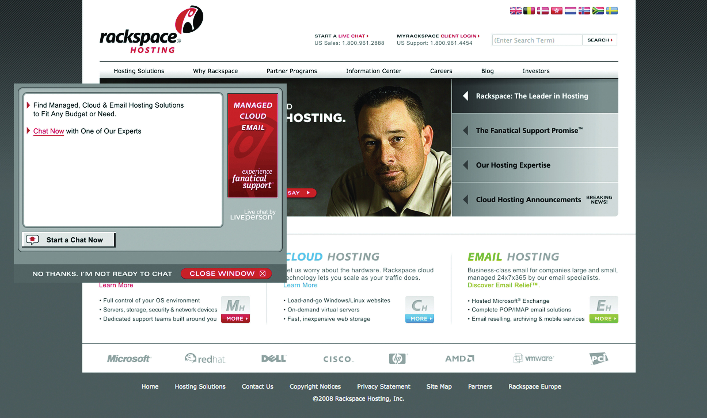

If anything, the Internet and the World Wide Web have highlighted the importance of a customer- focused approach to business and marketing. It may seem obvious now, but the heydays of mass media marketing seemed to assume that people could be persuaded to purchase anything, provided there was sufficient advertising to promote a product. While signs declaring “The Customer Is Always Right” may have been stuck to the walls of shops and restaurants, the customer did not have much of a voice outside of that shop or restaurant.
Move forward a few decades to an increasingly connected society and marketplace, and the customer’s voice is being heard in blogs, forums, reviews, and other forms of social media. It is easier for consumers to connect with one another, albeit virtually, to share experiences with services and products.
Customer relationship management (CRM)As the name suggests, this refers to the management of relationships with your customers. is, as the name suggests, about managing relationships with customers. It should imply a customer-focused approach to business for fostering real relationships with these important stakeholders: customers.
Often, online marketing is referred to as e-CRM (electronic customer relationship management). This appears to underline the importance of technology in CRM. It also highlights the most important consideration of any eMarketing tactic: customers.
CustomersA person who buys or uses goods or services; a person with whom a business must deal. can be seen as the most important stakeholdersA person or organization with an interest (a “stake”) in how a resource is managed. in a business’s success. Without customers purchasing goods or services, most businesses would not have a revenue stream. But it can be difficult to shift from realizing this important fact to implementing it into day-to-day business decisions and strategy.
A successful relationship with a customer is based on meeting (and perhaps even exceeding) his or her needs. It is in determining what problems the customer has and in providing solutions to those problems.
Maintaining good customer relationships is critical to the success of a business. The costs associated with acquiring a new customer are generally far higher than the cost of maintaining an existing customer relationship. This is why investing in customer relationship management (CRM) should result in increasing revenue for the business.
The cycle of CRM starts with determining what problems potential customers might have and then presenting solutions to those problems. Solutions are implemented, and then ongoing service maintains the relationship with the customer.
Take, for example, two people booking an overseas holiday. One is a twenty-three-year-old recent graduate who is visiting Argentina for three months with a friend; one is a thirty-eight-year-old mother of two young children planning a family holiday to Thailand. If they both walked into a travel agency, the travel agents would make judgments on their dress and appearance to determine how they will aid each of them in booking their holiday (and how much commission the agent will be able to earn). The travel agent will also ask further face-to-face questions to try to sell additional services to these two customers. For the twenty-three-year-old, additional services might include travel insurance that covers extreme-sports activities and a calling card that allows her to call home from anywhere in the world. For the thirty-eight-year-old, additional services could include babysitting services included in a hotel reservation.
Seat the two potential travelers in front of their computers, and you no longer have human travel agents to make snap judgments based on appearance or to try to sell additional services based on the type of traveler they see. Of course, you also no longer have the overhead costs of a travel agency and agents. However, Web technology does allow for similar, and often superior, judgments and sales opportunities.
For example, both travelers are likely to have started researching their trips using a search engine. Creating landing pages tailored to the types of searches being made can allow the opportunity to tailor the products being presented to each traveler.
Technology can also be used to allow the online business to interact personally with a Web visitor and also to provide the visitor with information she might not get in a travel agency—unbiased reviews from other customers. Technology can and should be used to treat different customers differently.
Web technology allows for customer-related marketing decisions to be made and tested relatively quickly and adjusted as required.
For example, in 2002, Jeff Bezos of Amazon.com launched free shipping for orders over $99 in value. While the offer was advertised as being for a limited time only, this time limit enabled Amazon to test the effect of the offer on its bottom line and still retract it if necessary. Over the months, the order threshold for free shipping dropped, and today U.S. Amazon.com orders over $25 ship for free. However, free shipping does not mean priority shipping, so orders can still be delivered in a shorter period of time—for a delivery fee.
Electronic customer relationship management (e-CRM) uses technology in a number of ways to cement CRM into the way that organizations conduct themselves. Once a business shifts its focus to consumer needs, it will find that all these technologies feed each other. However, the fundamental principle of e-CRM is to remember that technology should be used to enable customer relationships, not replace meaningful relationships.
Why is knowing what keywords purchasing customers use helpful for CRM?
First, the data that are collected online should be used to build meaningful profiles of potential customers, and that information should be used in fostering relationships. Web analytics tools gather a wealth of data that can inform customer relationships, from search keywords used to reach a Web site, to navigation paths on a Web site. It is even possible to capture this kind of information about specific customers when they perform an action such as purchasing or subscribing on a Web site. Without the customer knowing, the referral source of their visit and even an indication of their navigation path can be captured, along with their order or registration details, and stored for future use.
CRM software enables businesses to manage all customer and leadA potential customer. information across all departments in a centralized place. No matter whom a customer speaks to within a business, all employees can access the same information recorded over time—a 360-degree view of the customer. This means that any time someone inside the organization looks up the customer, he can see every interaction the organization has had with the customer, what previous queries have been raised, and how these have been solved in the past.
CRM software also enables businesses to automate much of the sales cycle, freeing salespeople to spend time on creating personal relationships where it matters—with potential and existing customers.
Technology, of course, has also changed the ways that customers can contact companies. In Chapter 8 "Social Media" and Chapter 11 "Online Reputation Management", the importance of letting the customer select communication channels was highlighted. Customer relationships are no longer driven by telephone call centers, but instead blogs, Twitter, e-mail, and instant messenger (IM) are all used as customer-service channels both pre- and postsale.
It is one thing to place the customer at the center of an organization’s planning and execution of business plans and another to have customers driving the direction of a business. Many new, Web-based businesses rely on the latter for their business to succeed and actively encourage customers to take the lead and add value to the business. Services such as Flickr (http://www.flickr.com), Delicious (http://delicious.com), and Twitter (http://www.twitter.com) are examples of services that are user driven rather than user-centric. They provide tools that enable users to make the service their own, often by allowing outside developers access in order to create supplementary services.
Savvy organizations can also provide tools to customers to drive their business, passing on tasks to customers that might ordinarily have been performed by the organization. For example, many airlines now allow travelers to check in online prior to arriving at the airport. Although they are giving travelers convenient tools and increased options when it comes to checking in, the airlines are also outsourcing the check-in process to their travelers. As more travelers select to check themselves in, staff costs for airlines can be reduced. The travelers are doing the job for free.
CRM should infuse every aspect of a business (in the same way that marketing should infuse every aspect of a business), but it is useful to look at the different ways that CRM is implemented.
Operational CRMEntails supporting the “front office” business processes, which include customer contact (sales, marketing, and service). refers to the most obvious channels that relate to customers: the front end of a business and its customer service. From a Web technology point of view, operational CRM informs the Web site a customer sees as well as his entire online user experience. Technology also enables effective customer service, from providing numerous contact channels to presenting technology that records all customer contacts.
Data mining is the analysis of large volumes of data in order to determine patterns, correlations, relationships, and trends in the data.
Analytical CRMSoftware that assists a business in building customer relationships and analyzes ways to improve them. analyzes data collected by a business to determine information about customers that can inform sales and marketing decisions. Data mining is a crucial step to effective CRM. Web analytics and conversion optimization can be seen as part of the CRM process. Data collected about the nature of visits to your Web site can be used to make informed decisions about where to focus attention based on customer behavior. Past purchasing behavior of customers can be analyzed to predict future purchasing behavior. Data can be used to segment customers, and so communications can be tailored.
For example, Amazon.com uses the purchase history of a customer to make recommendations to that customer for future purchases. Thus, a customer who has purchased a number of cookbooks in the past will be sent offers related to cookbooks. Amazon.com also looks at the purchase behavior of customers who buy the same book and uses those data to recommend books based on similar customers’ preferences. This process is referred to as collaborative filtering.
Sales-force automation uses CRM software to manage sales cycles and to collect customer sales data. The software enables businesses to track leads, to schedule transactions and communications with potential and existing customers, and to generate detailed reporting on the sales process. There are numerous software providers, such as Salesforce.com.
Collaborative CRMUmbrella term for all the interactive options for serving customers. It is people-based customer support that includes collaborative browsing, Web-based text and voice chat, desktop sharing, application sharing, file transfer, and phone support. refers to a process that combines customer data across all facets of a company. For example, queries regularly submitted to the technical support or customer service arm of a business can be used to inform Web site updates (updating content on the Web site to address a query that is regularly submitted) and to inform product development. Instead of various departments collecting their own customer data and using these in isolation, data are collaborated so that all channels are making informed decisions based on an entire customer experience.
Broadly, customer relationship management (CRM) can be looked at from the following standpoints:
Effective CRM across all three channels can also create a powerful new marketing and referral force for a company: its happy customers. Delighting customers fosters positive word of mouth.
While CRM is a customer-centric approach to doing business, CRM needs to be approached strategically—in line with the business objectives of a company.
The first step to any CRM initiative is to understand the value of a customer relationship to a business. While this is unique to each customer, data mining can be used to determine the value of segments of customers.
Figure 17.1 The Value of a Customer Relationship to a Business

The revenue generated by a customer is literally the sales made to the customer. This can be calculated on a one-off basis directly related to the cost of acquiring that particular sale, or it can be calculated over the lifetime of the customer relationship. However, referrals made by a customer can also be included as part of the revenue generated by the customer.
The cost of acquiring the customer refers to the marketing and advertising channels used to acquire that customer. In eMarketing, this is the CPA (cost per acquisition) of any of the channels used to acquire a customer. The benefit of eMarketing is that it is highly measurable and trackable, enabling a relatively accurate calculation of CPA.
The lifetime value of a customer refers to calculating the costs of both acquiring and retaining a customer against all purchases made over the lifetime of the customer relationship. One can also look at customer value in terms of the referrals that a customer generates for a company.
For example, a potential customer looking to purchase a digital camera is likely to search on Google for cameras. As a company selling digital cameras, your excellent PPC (pay-per-click) advertisement and compelling offer attracts the potential customer who clicks through to your Web site. Impressed with your product offering, she purchases a camera from you and signs up to your e-mail newsletter as part of the payment process.
Analyzing the spending on your PPC campaign against the sales attributed to the campaign will give the cost per acquisition of each sale. In this case, this is the cost of acquiring the new customer.
As she has now signed up to your newsletter, each month you send her compelling information about products she might be interested in. If you have taken note of her obvious interest in photography, these newsletters could be focused on photography and highlight additional products she can use with her new camera. The costs associated with sending these e-mails are the costs of maintaining the relationship with the customer. When she purchases from you again, these costs can be measured against the repeat sales she is likely to make.
While most companies define customer loyalty based on the repeat purchases of happy customers, some business are built around one-off purchases. Wedding photography is one of those businesses. With so much time and effort invested in each customer relationship, how can this be returned into repeat business?
Bella Pictures (http://www.bellapictures.com) focuses on ensuring that its very satisfied brides refer its service to friends and family. In fact, 30 percent of new business comes from these referrals.
It also offers services to wedding guests, such as allowing them to make orders of wedding photos themselves, which increases its customers for each wedding.Nicole Lewis, “Marrying CRM to a New Definition of Loyalty,” InsideCRM, October 23, 2008, http://www.insidecrm.com/features/new-definition-loyalty-102308 (accessed June 24, 2010).
While CRM initiatives need to satisfy customer goals—increased customer satisfaction and approval—these need to be in line with business goals. Business goals are to increase overall revenue. In terms of CRM, this can be either to increase revenue generated by each customer, to increase the number of customers, to reduce the costs of acquiring a customer, or a combination of all three.
It is important to align CRM initiatives with business goals so that success of the initiatives can be measured. It is here that CRM goals can be set across marketing channels, sales channels, and service channels.
Zappos (http://www.zappos.com), a U.S. online shoe retailer, bases much of its success on its customer service. It offers free shipping on all its purchases, as well as free returns. In fact, goods are shipped with a preprinted return label, making the process straightforward for customers. Zappos also invests heavily in its customer service team, empowering each member of the team to do what he needs to do to delight customers.
For example, Zaz LaMarr blogged about her experience with Zappos. She had meant to return some shoes to Zappos, but her mother passed away, and naturally she just didn’t have time. Zappos arranged to have UPS come pick up the shoes and then sent her flowers.
Yahoo! shows nearly two thousand links to her blog post, which has generated comments like the following:
There is no doubt that Zappos’ customer service costs are high. Not only is shipping free, but its customer service team has been given the authority to make gestures like the one above. The return to Zappos in terms of goodwill is almost immeasurable (although its online reputation is excellent) but no doubt leads to increased referrals and sales and customer loyalty.Meg Marco, “Zappos Sends You Flowers,” The Consumerist, October 16, 2007, http://consumerist.com/consumer/above-and-beyond/zappos-sends-you-flowers-311369.php (accessed November 17, 2008).
When it comes to the marketing channel, CRM initiatives can be used both in the acquisition of new customers and in the marketing to existing customers (which can be seen as acquiring new sales from existing customers).
CRM can be looked at from several perspectives:
Successful e-mail marketing stems from a very basic customer need: privacy and permission. The very first step required in using e-mail to establish a relationship with a customer is in gaining his or her permission.
Data mining and segmenting customer databases allow for e-mail marketing to be tailored to customers, while e-mails allow for extensive personalization on a mass scale.
E-mail is often the primary point of contact for all customer-service-related messages, from automated e-mails dealing with the administration of orders, to contacts with the customer service team.
Online advertising is a double-edged sword when it comes to CRM (customer relationship management). It can be a very effective acquisition tool for new customers, but intrusive advertising can attract attention for all the wrong reasons. Effective online advertising speaks to customers’ needs and presents solutions to them, hopefully attracting attention without being overly intrusive.
Affiliate marketing started by making the most of existing relationships other parties have with potential customers. Affiliate marketing can be an excellent sales and acquisition channel, but it is not without its problems from a CRM perspective. Another entity is acquiring leads on your behalf, which can mean a loss of control when it comes to the messages used to attract leads. Ensure effective communication with affiliates so that they are sending the right message to your leads.
Search engine marketing, whether search engine optimization (SEO) or pay-per-click (PPC) advertising starts with customer intent. Existing customer data can indicate where to focus search engine marketing efforts, especially when it comes to analyzing how well a Web site caters to the intent indicated by a customer’s search term.
The use of social media is based on customer needs and preferences. Online reputation management tracks social media in particular (as well as other online sources) to establish consumer sentiment. These valuable data should then be used to inform an organization’s marketing strategy. Social media also present a powerful tool for turning delighted customers (who are expressive online) into advocates for an organization. Lastly, social media allow several new communication channels for an organization, enabling customer communications and customer service to take place where the customer feels most comfortable.
Effective Web development and design starts with customer needs and should focus on the experience of Web users. Designing for customers first and foremost should give Web visitors a seamless experience, presenting your goods and services to them without effort on their behalf.
Through all the eMarketing tactics, effective analytics is the most useful CRM tool. It allows each channel to be measured on its merits, and the customers acquired by each channel can be analyzed.
Technology, and especially the technology enabled by the Internet, has had enormous repercussions for CRM (customer relationship management). In many cases, technology has helped streamline many CRM processes as well as cut the costs of CRM initiatives.
It is amazing how much technology has changed the ways we communicate with each other. In the same way, it has changed the way that organizations and companies can communicate with us.
Perhaps one of the first customer service developments to come from the Internet is customer service over e-mail. It is standard for Web sites to have contact addresses as well as telephone numbers, adding an additional channel for customer contacts. E-mails can also be automated to keep customers informed of progress of a transaction, whether it is shipping goods bought online or the progress of an insurance claim. Each action within an organization can trigger an automatic e-mail, serving to ensure customers feel informed at every step.
Similarly to automated e-mails, the mobile phone is also being used to keep customers informed of the progress of transactions. Short message service (SMS) messages can be automated in the same way that e-mails are, again ensuring customer peace of mind.
Technology such as VoIP (voice over Internet protocol) means that voice calls can be routed cheaply over the Internet. Thousands of people keep in touch around the globe with services such as Skype (http://www.skype.com), and this has impacted call centers as well.
Using similar technology, phone calls can be routed to call centers in any location around the globe. Many companies in developed nations have located their customer call centers in developing nations, where staff and other overhead costs are far lower. The Internet means that these calls can be routed for a lower cost than in-country calls, with minimal loss of call quality. That means that a UK customer calling Lastminute.com to book a flight, for example, could in fact be speaking to someone in India.
The staff in these call centers undergo extensive training on the culture of the people they will be speaking to, as well as on the ethos of the company they represent. Even though a customer is speaking to someone on another continent, it is imperative for the business that the experience matches its brand as closely as possible.
Instant messenger (IM) allows fast, instant text-based chat. Services such as Windows Live Messenger, Gtalk, and Jabber keep people around the world (and in the same room) connected. IM can also be an effective customer service channel.
Figure 17.2 Example of an IM Pop-Up on the Rackspace Web Site
When potential customers are on a Web site, they may have very quick questions or concerns that they need to have addressed before proceeding with an order. Sending an e-mail with these questions can mean a lengthy period before these questions are answered, and they may be loath to pick up a phone to have the queries answered. In instances such as these, an IM service can easily, quickly, and inexpensively solve these queries.
There are two main ways that IM is integrated onto Web sites. The first is customer initiated, and the second is initiated by a script on the Web page being viewed.
Customer-initiated IM involves indicating clearly to a customer that the IM channel is available, while giving clear instructions on how to use it. Many free chat clients may be easily integrated in this way, such as Skype and Meebo (http://www.meebo.com).
A script can also be used to initiate a chat with a potential customer. When a Web visitor has been on a Web page for a fixed period of time without performing any action (such as clicking on a link), a window can appear in the browser asking if he would like to chat with someone about the products offered. The Web visitor can then either close the window and continue on his own or choose to chat. If the latter is chosen, a customer service representative will then commence to chat to the consumer.
This can be extremely effective for complicated or expensive purchases. At the point of decision making, the organization can provide personal support and reassurance.
CRM software can be used to automate lead and sales processes and to collect customer information in a centralized place.
Organizations are large, and a customer may speak to any member of an organization, depending on the nature of the communication. It would be extremely frustrating for the customer to have to explain all previous dealings with the organization with each communication, and it can be extremely frustrating for an organization not to know who has spoken previously with a customer and what was dealt with.
Fortunately, there are many technology options that help record all this information in one place, whether it be related to potential, current, or past customers.
As well as enabling recording of data, most of these services can also schedule elements of the sales process and set reminders where appropriate for follow-up action.
Some notable examples include SalesForce (http://www.salesforce.com), Genius (http:// www.genius.com) and Highrise (http://www.highrisehq.com) from 37 Signals.
One of the most powerful features of interactions and transactions over the Internet is that everything is tracked and recorded in server logs, providing a wealth of data that can be analyzed to make business decisions.
Importantly for CRM, this means that the acquisition source of customers may be recorded and analyzed against sales data for customers from the source. This leads to a very accurate ROI (return on investment) calculation and indicates where CRM and marketing efforts should be focused.
The key to effective use of technology in CRM is integration. Ensure that all channels can be tracked and that that information is usable to all parties within an organization. Knowing where your customers come from but not what they purchase is pointless: these two metrics need to be compared in order to produce actionable insights.
Vendor relationship management (VRM)The emerging school of thought that incorporates the tools, technology, and services that make it easy for customers to manage relationships with vendors. is the reciprocal of CRM. VRM in this context describes an emerging, progressive school of thought, technology, tools, and services that help customers to manage relationships with vendors. VRM tools and services are still very much in their infancy, as is the concept of VRM.
If you are interested in reading further about VRM, the article “VRM in a Nutshell” is a great place to start: http://www.vrmlabs.net/vrm-in-a-nutshell.
VRM seeks to address the imbalance of power when it comes to customer and vendor relationships. Traditionally, vendors collect and hold information about a customer and use it to get the most out of their relationship with the customer. For many vendors, “get the most out of the customer relationship” translates to making the most revenue for the lowest cost from a particular customer or group of customers. VRM notes that customers can be far better custodians of data that are very useful to vendors. For example, Amazon.com collects data about a customer’s purchasing and browsing history and makes recommendations based on that history. However, the customer possesses information that Amazon.com doesn’t: for example, the customer knows which books were purchased as gifts and therefore are not indicative of personal preferences.
The goal of VRM, however, is not to make sure that vendors have access to this information; instead, it is to give customers the power over the information that is shared with vendors. Traditional CRM locks that data into a single relationship, while VRM seeks to give the customer the power to share pertinent data with vendors as he sees fit. These relationships can be controlled by the customer as opposed to being controlled by the vendor.
VRM is a dynamic way of looking at customer-vendor relationships. Although the terms and tools may be new, the principles and the frustration with current practices are not.
For more information on VRM, visit the Project VRM wiki at the following Web page http://cyber.law.harvard.edu/projectvrm/Main_Page, read the blog for the project at http:// blogs.law.harvard.edu/vrm, or visit VRM Hub at http://www.vrmhub.net, or VRM Labs at http://www.vrmlabs.net.
Like many service industries, the glass-replacement industry is about speed, efficiency, and convenience. If a customer’s glass cracks or breaks, the customer wants it repaired or replaced as swiftly and conveniently as possible.
Keenly aware of the consumer’s decision-making criteria, market-leading Southern African glass supplier PG Glass constantly looks for ways to serve customers faster and more responsively than the competition. So when figures revealed that there were about 4.6 million regular Internet users in South Africa, the company went about finding better ways to exploit the Web channel for competitive advantage.
Managing director Rob Curle recognized that the latest generation of the Internet was capable of vastly more than simple brochureware hosting (i.e., a Web site that is an online brochure) and was determined to put Web and mobile technology to use more effectively in order to satisfy customers’ needs—and leapfrog conventional Web site capabilities.
After extensive research, PG Glass selected The Virtual Works to supply the specialist expertise and systems to put the Web to work strategically for the firm. The Virtual Works’ locally developed V3 system was custom configured to suit and now administers the PG Glass Web site’s back end. It makes it easy for customers to post a service request on the Web site without having to navigate through the whole site to find a solution. The system uses intuitive rules to automatically match a customer’s profile and need for service to the right resource at the right PG Glass franchise—and instantly distributes the inquiry to the mobile phone of the right person on the PG Glass side. The technology sends a reference number to the customer and then tracks service fulfillment using customizable rules to automatically alert PG Glass staff and managers to workflow delays by e-mail and short message service (SMS). Detailed reports provide the PG Glass team with service measures and benchmark data in order to immediately identify service interruptions or areas requiring improvement, as well as the information required to identify and reward employees for superior service performance. The system securely stores customer data in a unified system, making them available via a password and user identification protocol to PG Glass franchisees over the Internet on demand.
Thanks to the V3 system, most leads are precisely routed to the branch in just a few seconds—putting customer inquiries into the hands of the right PG Glass people hours before they would have gone to competitors.
The results so far have shown that investing in technology to implement and maintain CRM (customer relationship management) is not only vital in business but also extremely profitable. In the first eight months of V3’s operation, PG Glass experienced a 110 percent increase in Internet-generated leads, which translates into a significant increase in sales and an impressive ROI (return on investment) for the technology.
Other paybacks to PG Glass following the strategic application of Web services include the following:
The PG Glass and Virtual Works Web sites are available at http://www.pgglass.co.za and http://www.virtualworks.co.za, respectively.
William Band, “The Right CRM Metrics for Your Organization,” Forrester Research, October 1, 2007, https://www.salesforce.com/assets/pdf/analysts/forrester_rightcrm.pdf (accessed June 24, 2010).
John Edwards, “Get It Together with Collaborative CRM,” InsideCRM, November 29, 2007, http://www.insidecrm.com/features/collaborative-crm-112907 (accessed November 17, 2008).
“Meebo Launching Media-Enabled Chat Rooms,” 1b LiveBusiness, May 14, 2007, http://www.1ivebusiness.com/news/1850 (accessed November 17, 2008).
Keith Regan, “Amazon Posts Profit, Makes Free Shipping Permanent,” E-Commerce Times, January 24, 2003, http://www.crmbuyer.com/story/20562.html (accessed November 17, 2008).